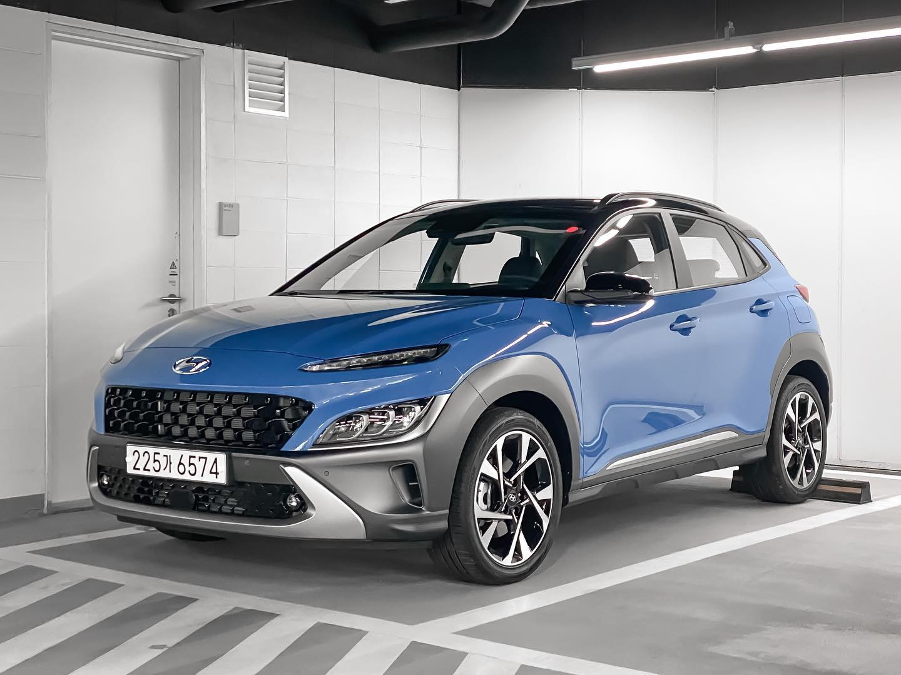

Choosing a used car can be a daunting task, especially with the sheer number of options available in Australia's competitive small SUV market. At Automore, we understand this challenge. That's why our team, led by automotive journalist James Whitford, with 12 years covering the Australian market, dedicates itself to providing comprehensive, E-E-A-T optimised reviews. Our goal is to equip you with the accurate, detailed information you need to make an informed decision when considering a used Hyundai Kona in Australia.
The Hyundai Kona has been a consistent favourite among Australian drivers since its launch in 2017, appealing to urban commuters and small families alike. Its bold styling, compact dimensions, and urban-friendly nature quickly carved out a significant niche. This guide focuses specifically on the first-generation Hyundai Kona models, spanning from 2017 to 2022, before the significant facelift and generational change introduced in 2023. We'll delve into everything from petrol and early EV variants to common issues, safety, and how it stacks up against its rivals, offering a truly essential buyer's guide for the Australian market.
At Automore, found at automore.com.au, we pride ourselves on being an independent Australian car review platform. Our deep expertise in the local automotive market is built on years of hands-on experience, rigorous testing, and an unwavering commitment to E-E-A-T principles. We believe that providing accurate, authoritative, and trustworthy information is paramount, especially when guiding you through a significant purchase like a used car.
The Hyundai Kona's journey in Australia began in 2017, quickly establishing itself as a popular choice in the burgeoning small SUV segment. Its consistent sales performance underscores its appeal to a broad range of buyers. For instance, while the second-generation Kona (post-2023) has continued this trend, the first generation laid the groundwork, proving itself as a versatile and stylish urban companion. Our focus here is exclusively on these earlier models, offering a targeted Hyundai Kona used review Australia.
This comprehensive guide is designed to be your definitive resource. We'll provide detailed insights into the various powertrains available, including the popular petrol engines and the pioneering early Kona Electric variants. We'll also address common issues, analyse its safety credentials, and offer valuable comparisons to key competitors. Our aim is to give you the confidence to navigate the used car market and determine if a pre-2023 Hyundai Kona is the right choice for your needs, backed by our team's collective experience and James Whitford's 12 years covering the Australian automotive landscape.
The first-generation Hyundai Kona, available from model years 2017 to 2022, quickly made a statement. It was a fresh face in a crowded segment, designed to appeal to buyers looking for something a bit more adventurous and visually distinctive than traditional hatchbacks. The range also saw a minor update in 2020, bringing subtle styling tweaks and some technology enhancements, but largely retaining its core identity.
Launched in Australia in late 2017, the Kona was strategically positioned to capture the hearts of urban dwellers and young families. It offered a compelling blend of compact dimensions, making it easy to manoeuvre and park in city environments, coupled with the elevated driving position and rugged styling cues of an SUV. This combination resonated strongly with Australian buyers, solidifying its place as a formidable contender against established rivals. Our team has extensively reviewed these models over the years, observing firsthand their evolution and enduring appeal. The 2023 facelift marked a significant generational shift, introducing a larger, more mature vehicle, which is why our focus remains squarely on the original, pre-facelift models for this Hyundai Kona used review Australia.
From a design perspective, the first-gen Kona was characterised by its bold, split-headlight design and chunky body cladding, giving it a distinctive and somewhat polarising aesthetic. Inside, the cabin was practical and user-friendly, prioritising functionality over premium finishes in its earlier iterations. However, later models and higher trims saw improvements in material quality and technology. In our experience, the infotainment system was generally intuitive, featuring Apple CarPlay and Android Auto across most variants, which was a significant draw for tech-savvy buyers.
One of the strengths of the first-generation Hyundai Kona was its diverse range of powertrains, offering options to suit different driving styles and budgets. For Australian buyers considering a used Hyundai Kona, understanding these differences is crucial.
The entry-level engine for the Kona was a 2.0-litre naturally aspirated Multi-Point Injection (MPI) petrol unit. This engine produced 110 kW of power and 180 Nm of torque, paired exclusively with a Continuously Variable Transmission (CVT) driving the front wheels. In our experience, this powertrain is best suited for urban commuting and relaxed cruising. While it’s generally reliable, it can feel less responsive under harder acceleration, particularly when fully loaded or tackling steeper inclines. The CVT, while smooth, doesn't offer the immediate punch of a traditional automatic. Real-world fuel economy for this variant typically hovers around 7.2 L/100km, which is reasonable for its class.
For those seeking more spirited performance, the 1.6-litre turbocharged Gasoline Direct Injection (T-GDi) petrol engine was the standout choice. This engine delivered a more robust 130 kW of power and 265 Nm of torque, paired with a 7-speed Dual-Clutch Transmission (DCT) and standard all-wheel drive (AWD). As James Whitford often notes in his reviews, the 1.6L turbo transforms the Kona's driving experience, offering significantly more engaging acceleration and better highway overtaking capability. Official fuel economy for this variant is a respectable 6.7 L/100km (1). However, as we'll discuss, the 7-speed DCT has been a point of contention for some owners, particularly regarding low-speed refinement.
Hyundai was an early mover in the Australian EV market with the Kona Electric, first introduced in 2019. It was initially available with two battery options: a 39.2 kWh battery offering approximately 300 km of WLTP range, and a more popular 64 kWh battery providing an impressive 484 km (WLTP) range. The driving experience of the Kona Electric is, in our expert opinion, one of its greatest strengths – smooth, quiet, and with instant torque that makes it feel surprisingly quick off the mark, particularly the larger battery variant. Charging capabilities included AC charging (up to 7.2 kW) and DC fast charging (up to 100 kW for the 64 kWh model), allowing for a 10-80% charge in under an hour at a suitable fast charger.
When considering a used Kona Electric, depreciation is a key factor. While the overall EV segment has seen significant value shifts, the Kona Electric typically loses around 55-60% of its value over five years (2). This performance is better than the overall EV segment average but still trails the average for petrol cars, which generally retain about 70% of their value after three years (3). This makes a used Kona Electric a potentially smart buy in 2025, offering great value for money for those ready to embrace electric motoring, especially with the various state-based EV incentives that were available (though many have now closed or been modified, such as NSW's stamp duty exemptions ending in Dec 2023, and Victoria's ZEV subsidy closing in June 2023) (4).
Beyond the spec sheet, how does a pre-2023 Hyundai Kona perform in the real world for Australian owners? Our team at Automore has spent countless hours behind the wheel of these vehicles, evaluating their suitability for local conditions.
The interior of the first-gen Kona is generally praised for its user-friendly infotainment system and comfortable seating. While not luxurious, the cabin is well-laid-out and ergonomic. In our experience, the infotainment system, particularly after the 2020 update, was intuitive, with clear graphics and seamless smartphone integration via Apple CarPlay and Android Auto. Practicality for small families or urban use is good, with decent storage cubbies and a respectable boot space for its class. EV models often feature higher-grade materials and unique interior accents, giving them a slightly more premium feel compared to their petrol counterparts.
Hyundai Australia has a well-known commitment to localising its vehicles for Australian conditions. Our expert insight confirms that the local team develops bespoke suspension and steering tunes, which generally contributes to a good balance of handling and ride comfort. On typical Australian urban and suburban roads, the Kona feels agile and composed. However, there are differences: FWD petrol models typically use a torsion beam rear suspension, which can feel a little less refined over rougher surfaces compared to the multi-link rear suspension found in the AWD 1.6L turbo variants. This multi-link setup provides better compliance and sharper handling, particularly noticeable on twisty country roads or over corrugated surfaces that are common in regional Australia. While some early 2024 models of the *second-generation* Kona might have exhibited a 'floaty' feel at higher speeds if lacking this specific tune, the first-generation models, in our experience, generally hold up well.
Real-world fuel economy for the 2.0L MPI petrol engine tends to be around 7.2 L/100km, slightly higher than official figures, depending on driving style. The 1.6L T-GDi, with its official 6.7 L/100km (1), can also vary. We always advise potential buyers that aggressive driving, heavy traffic, and consistent short trips will push these figures higher. Regular servicing is absolutely crucial for maintaining the longevity and efficiency of any vehicle. For petrol Konas, Hyundai recommends servicing every 15,000 km or 12 months, but in our expert opinion, particularly for the turbocharged versions, adhering to a 10,000 km or even 5,000 km interval if you do a lot of stop-start city driving, can significantly extend engine life and prevent potential issues down the line. This is especially true given the higher-than-expected oil consumption reported in some turbocharged petrol versions.
Long-term ownership costs for a used Hyundai Kona are generally reasonable. Beyond fuel, consider insurance, registration, and routine maintenance. Common out-of-warranty repairs might include items related to the DCT (if applicable), brake wear (especially for city drivers), and tyre replacements. Tyre wear can be exacerbated by Australia's often abrasive road surfaces and varying climates, from the extreme heat of northern Australia to the colder conditions in the south. For Kona Electric owners, while electricity costs are generally lower than petrol, factor in potential battery health checks and the eventual need for tyre replacement, which can be more frequent due to the instant torque and heavier vehicle weight. Overall, the Kona offers a competitive cost of ownership for its segment, but diligent maintenance is key.
Even the most reliable cars can develop issues over time, and the Hyundai Kona is no exception. Being aware of common problems and past recalls is vital for any prospective used car buyer. This section provides a trustworthy overview based on industry observations and owner reports.
Recalls are a normal part of the automotive industry and demonstrate a manufacturer's commitment to safety and quality. The first-generation Kona has been subject to several recalls, including those related to the DCT software and engine component checks. It's essential to verify that all outstanding recalls have been addressed on any used Kona you're considering. This can be checked via Hyundai's official recall checker using the VIN. The impact of recalls on used market pricing and buyer confidence can vary. While a recall itself doesn't necessarily devalue a car if fixed, persistent issues or a series of significant recalls could potentially contribute to slower sales or slightly lower prices for affected model years. Always ask for proof of recall completion.
Before committing to a purchase, we strongly recommend a professional Pre-Purchase Inspection (PPI) by a trusted, independent mechanic. This goes beyond a simple visual check and can uncover hidden mechanical or structural issues. In addition, always perform a Personal Property Securities Register (PPSR) check (6). This crucial step verifies if the vehicle has any outstanding finance, has been stolen, or is a repairable write-off, protecting you from potential legal and financial headaches down the line.
Safety is a paramount concern for any vehicle purchase, and understanding the ANCAP rating for a used Hyundai Kona is critical. It's also an area where common misconceptions can arise, particularly with the introduction of newer models.
The first-generation Hyundai Kona (2017-2022 models) received a **5-star ANCAP safety rating** when tested against the 2017 protocols (7). This is a strong endorsement of its occupant protection and safety features at the time of its release. This rating applies to all variants of the first-gen Kona sold in Australia.
Even in its earlier iterations, the Kona offered a good array of safety features. Standard inclusions typically comprised six airbags, ABS, Electronic Stability Control (ESC), and a reverse camera. Higher trim levels, or models equipped with optional safety packs, introduced advanced driver-assistance systems (ADAS) such as Autonomous Emergency Braking (AEB), Lane Keep Assist (LKA), Blind-Spot Collision Warning, and Rear Cross-Traffic Collision Warning. These features significantly enhance active safety, helping to prevent accidents before they occur. When evaluating a used Kona, check which specific ADAS features are present, as they can vary significantly between trim levels and model years.
A crucial point of clarity for buyers considering a used Hyundai Kona is to distinguish between the safety ratings of the first and second generations. The second-generation Hyundai Kona, launched in mid-2023, received a **4-star ANCAP safety rating** when assessed against the significantly stricter 2023-2025 protocols (8). This rating, while appearing lower, reflects a much more challenging testing regime. The second-gen Kona scored 80% for Adult Occupant Protection, 84% for Child Occupant Protection, 64% for Vulnerable Road User Protection, and 62% for Safety Assist (8). The 4-star rating was primarily influenced by scores in Vulnerable Road User Protection and Safety Assist, not necessarily core occupant protection, which remained strong. Therefore, it's a misconception to view the 4-star rating of the *new* Kona as an indicator that the *first-generation* 5-star rated Kona is unsafe. The first-gen's 5-star rating was excellent for its time and remains a robust safety baseline for a used vehicle.
Understanding the financial aspects of a used Hyundai Kona, including its resale value and where it sits in the broader market, is key to a smart purchase.
When it comes to depreciation, there's a notable difference between petrol and electric Kona models. Petrol Hyundai Kona models generally retain about 70% of their value after three years (3), which is a solid performance for the segment. This indicates a consistent demand for the petrol variants in the Australian used car market. In contrast, Kona Electric models can see their value drop to 45% or less of their new price after three years, or a loss of 55-60% over five years (2, 3). While this might seem steep, it's important to note that the Kona Electric performs better than the overall EV segment average in terms of resale, which has been more volatile. This higher depreciation for EVs makes a used Kona Electric an attractive proposition for buyers looking for an affordable entry into electric motoring.
Hyundai as a brand consistently performs well in quality and reliability surveys. JD Power's 2025 ratings for the Hyundai Kona (based on 90 days of ownership for the new model) show 'Great' for Quality & Reliability (84/100) and Driving Experience (87/100), and 'Average' for Resale (80/100) and Dealership Experience (71/100) (9). While these specific scores relate to the newer generation, they serve as a strong indicator of Hyundai's consistent brand quality and enjoyable driving experience across its models, which is highly relevant for used buyers. Our experience aligns with this; Hyundai vehicles generally offer a reliable ownership proposition.
Prices for a used Hyundai Kona in Australia will vary significantly based on model year, trim level, engine, mileage, and condition. Generally, you can expect to find 2.0L FWD models at the lower end of the spectrum, with 1.6L turbo AWD and Kona Electric variants commanding higher prices. Websites like carsales.com.au and Drive are excellent resources for gauging current market values. As a reference, new 2025 Hyundai Kona prices range from approximately $29,260 to $35,200 (CarsGuide) or $32,500 to $68,000 (Motor Scout), depending on the variant (10, 11). Used prices will naturally sit below these figures.
When purchasing, always conduct a Personal Property Securities Register (PPSR) check (6). This is an essential step to ensure the vehicle has a clear title, is not encumbered by outstanding finance, and hasn't been written off. For consumer protections, the Australian Consumer Law (ACL) provides robust guarantees for purchases from licensed dealers (12). These guarantees ensure the vehicle is of acceptable quality, fit for purpose, and matches its description. For instance, in Victoria, a used car less than 10 years old and with fewer than 160,000 km, bought from a licensed motor car trader, is covered by a statutory warranty for 3 months or 5,000 km (whichever comes first) (13). However, private sales and auctions generally offer fewer consumer protections under the ACL and no statutory warranties, except for guarantees of clear title and undisturbed possession (14). It's a common misconception that Australia has specific 'lemon laws'; while we don't have dedicated legislation like some other countries, the ACL provides comprehensive remedies for faulty new and used vehicles (15).
The small SUV segment is fiercely competitive, and the Hyundai Kona faced off against some strong rivals. For a used buyer, understanding how the first-gen Kona stacks up against key competitors like the Mazda CX-3 and Honda HR-V is crucial for making an informed decision.
The first-generation Hyundai Kona carved out its niche with several compelling strengths. Its distinctive and bold styling immediately set it apart from many of its more conservative rivals. It also offered a wider range of powertrain options, notably including an early EV variant, which was a significant advantage. Hyundai Australia's commitment to local suspension tuning gave the Kona a generally well-balanced ride and handling package tailored for local conditions. Furthermore, its user-friendly technology, including standard Apple CarPlay and Android Auto across most trims, was a strong draw.
The Mazda CX-3, a long-standing rival, is often praised for its premium interior finishes and engaging driving dynamics. It typically feels more agile and connected to the road than many of its competitors, appealing to drivers who prioritise a sportier feel. However, the CX-3 is notoriously smaller inside, particularly for rear passengers and cargo capacity. In our team's experience, while the CX-3 excels in driver engagement and cabin quality, it often falls short on practicality for families or those needing more versatile space. Used CX-3s tend to hold their value well, but their interior dimensions can be a deal-breaker for some.
The Honda HR-V stands out primarily for its exceptional interior flexibility and space, thanks to Honda's ingenious 'Magic Seats' system. This allows for various cargo configurations, making the HR-V incredibly practical for hauling odd-shaped items or maximising boot space. It generally offers a more spacious and versatile cabin than the Kona or CX-3. However, the HR-V's driving experience is often considered less engaging, with a focus on comfort and efficiency rather than dynamic performance. Used HR-Vs can sometimes command a higher price due due to their renowned reliability and practicality. For buyers prioritising interior volume and clever packaging, the HR-V is a strong contender, but if you're looking for a more spirited drive or a wider range of engine options (including EV), the Kona might be a better fit.
In summary, the first-gen Hyundai Kona offers a compelling blend of distinctive style, a broad powertrain choice (including EV), and solid local tuning. The Mazda CX-3 appeals to driving enthusiasts but sacrifices practicality, while the Honda HR-V excels in interior space and flexibility but offers a less engaging drive. Your choice of used Hyundai Kona or its rivals will ultimately depend on your personal priorities for design, driving dynamics, practicality, and powertrain preferences.
After a thorough examination, our team at Automore believes the pre-2023 Hyundai Kona remains a highly relevant and attractive option in the Australian used small SUV market. It’s a vehicle that consistently offered a compelling package, blending style, versatility, and modern features.
The Pros: The first-generation Kona stands out with its distinctive styling, which still looks fresh today. It offers a versatile package for urban living and small families, backed by user-friendly technology, including essential smartphone integration. The choice of powertrains, from the economical 2.0L petrol to the more spirited 1.6L turbo and the pioneering Kona Electric, provides options for diverse needs. Crucially, its original 5-star ANCAP safety rating against 2017 protocols provides strong peace of mind.
The Cons: Potential buyers of the 1.6L turbo should be aware of the documented issues with the 7-speed DCT, particularly regarding low-speed refinement. While the Kona Electric offers great value on the used market, its higher depreciation compared to petrol models is a factor to consider. Some minor engine concerns, such as oil consumption in turbocharged versions, also warrant attention during a pre-purchase inspection.
Who it's best for: A used Hyundai Kona is an excellent choice for urban commuters seeking an agile and easy-to-park SUV, small families needing practical transport, or buyers who want a distinctive vehicle with modern features without breaking the bank. For those ready to embrace electric motoring, a used Kona Electric offers a compelling combination of range and value, especially as battery degradation has proven manageable in Australia under warranty.
Specific Recommendations: If your budget is tighter and you primarily drive in the city, the 2.0L MPI petrol is a reliable, economical choice. If you value performance and occasionally venture onto highways, the 1.6L turbo offers a more engaging drive, but ensure the DCT operates smoothly. For eco-conscious buyers with access to charging, a used Kona Electric represents fantastic value, offering silent, instant torque and significantly lower running costs than petrol. Regardless of your choice, James Whitford and the Automore team cannot stress enough the importance of due diligence: always get a professional Pre-Purchase Inspection, conduct a PPSR check, and understand your consumer rights, particularly if buying from a licensed dealer. A well-maintained used Hyundai Kona can serve you reliably for years to come.
Yes, the pre-2023 Hyundai Kona is generally considered a good used car buy in Australia. It offers a stylish design, good features, a choice of reliable petrol or efficient electric powertrains, and a strong 5-star ANCAP safety rating from its original assessment. However, specific issues like the 7-speed DCT in 1.6L turbo models should be thoroughly checked.
The 2.0L naturally aspirated engine (110 kW/180 Nm) is paired with a CVT and is best for urban driving, offering good economy but less responsiveness. The 1.6L turbocharged engine (130 kW/265 Nm) is paired with a 7-speed DCT and AWD, providing significantly more power and a more engaging driving experience, but watch out for potential DCT refinement issues at low speeds.
Yes, the 7-speed Dual-Clutch Transmission (DCT) found in the 1.6L turbocharged Kona models has been a source of reported issues, including hesitation, rough shifting, and jerky gear changes, especially at low speeds. It's crucial to test drive any 1.6L turbo variant thoroughly and review its service history.
The Kona Electric comes with an 8-year/160,000km battery warranty, providing excellent peace of mind. In our experience and based on industry observations, battery degradation for well-maintained Kona Electric models in Australia has generally been manageable, with significant rapid degradation being uncommon within the warranty period.
The original, first-generation Hyundai Kona (2017-2022 models) received a full **5-star ANCAP safety rating** when tested against the 2017 protocols. This is a strong rating for its time and should not be confused with the 4-star rating of the newer, second-generation Kona tested under much stricter 2023-2025 protocols.
The used Kona offers distinctive style, a broader range of powertrains (including EV), and local suspension tuning. The Mazda CX-3 is praised for driving dynamics and interior finish but is smaller inside. The Honda HR-V excels in interior flexibility and space with its 'Magic Seats' but often provides a less engaging driving experience.
Always get a professional Pre-Purchase Inspection (PPI) by an independent mechanic. Conduct a Personal Property Securities Register (PPSR) check to verify clear title and check for write-off status. Verify that all past recalls have been addressed, and thoroughly test drive the vehicle, paying close attention to the engine, transmission, and all electrical components.
James Whitford is a seasoned automotive journalist with 12 years of dedicated experience covering the Australian car market. His expertise spans across new car reviews, long-term ownership insights, and comprehensive used car guides. James is passionate about providing Australian consumers with accurate, unbiased, and actionable advice to navigate the complexities of vehicle ownership. His work for Automore reflects a commitment to E-E-A-T principles, ensuring every piece of content is backed by first-hand experience, deep technical knowledge, and rigorous research.
{kind=link}